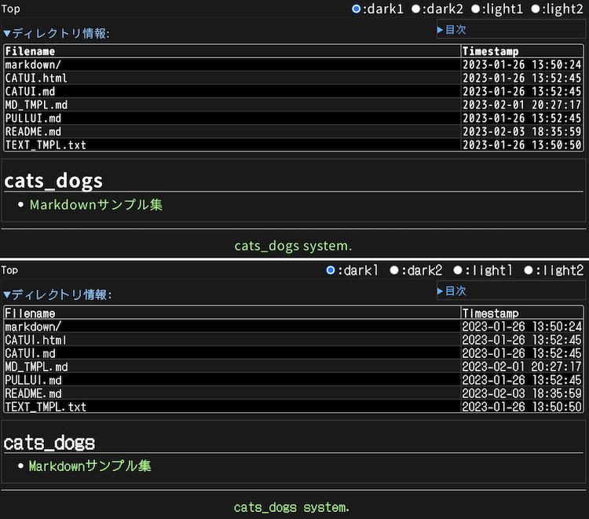
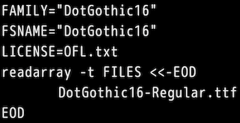
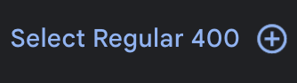
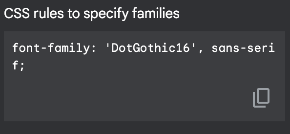

おはようございます。こんにちは。こんばんは。ふぇにっくちゅん です。
今回は解説記事の最終回です。
本記事では、cats_dogs アプリをカスタムするツールを紹介します。
紹介するのは、cat_nofn と cat_om です。
cat_nofn は、フォントを変更したい方向けのツールです。
cat_om は、cats_dogs のサーバ上に配置されている Markdown ファイルの更新を通知で得るためのツールです。
まずは、フォントの変更について説明します。
cats_dogs のフォントを変更する手順は、大きく2つです。
フォントのデータを作成するために利用するのが、cat_nofn です。
仕様書の How to Use にある通りの手順でフォントデータを作成できます。
CSS は HTML の表示を整えるためのファイルです。
たとえば「タイトルの文章の文字を一律に 16pt の大きさに設定する」などの設定ができます。
まずは、デモで利用したフォントのデータやCSSファイルが、どこに配置されているかを確認しましょう。
フォントのデータは、/var/cats/var/www/font/ のディレクトリに配置しました。
このデータは、cat_nofn で作成できます。
CSS ファイルは、/var/cats/var/www/css/ のディレクトリに配置しました。
では、仕様書だけではフォントの変更が難しい方のために、以降に手順を紹介します。
ここでは仮に DotGothic16 のフォントに変更します。
以下に、変更前と後の表示を示します。

まず、cats_dogs 用のフォントデータを作成するために、Google Font からデータをダウンロードします。
フォントの検索で、日本語を選択して DotGothic16 を探して、ダウンロードしてください。
これ以降は、cat_nofn の仕様書にある通りの手順を行います。
この手順の 6 で、設定ファイルを作成する必要があります。
今回の例では以下のようにします。

FSNAME は 3 の手順で作成したディレクトリ名を指定します。
LICENSE や readarray で読み込むファイルは、最初にダウンロードしたファイルを指定します。
FAMILY については、実際には何に設定しても大丈夫です。
今回は Google Font のページからコピーします。
Google Font のページには、CSS のサンプルを提示してくれる UI があります。
DotGothic16 のページを下にスクロールし、以下のボタンを探してください。

これをクリックした後、画面右上の「View selected families」を選択し、右のサイドバーを開きます。
このサイドバーの中から「CSS rules to specify families」を探してください。

この中に書いてある「DotGothic16」を FAMILY に記載します。
上図の設定ファイルは省略しましたが、EOD 以降は仕様書で示しているサンプルをコピーしてください。
出来上がった cats_dogs 用のフォントデータは、cat_nofn をダウンロードしたディレクトリに dst というディレクトリが作成されているはずです。
このディレクトリの中にある、CSSのファイルとフォントデータの入ったディレクトリを /var/cats/var/www/font/ に配置してください。
ここまでで、フォントデータが使える状態になりました。
では、CSS を設定し直して、表示させてみましょう。
CSS ファイルの変更は、まず base.css を変更します。
ここでは、「@import url」と「:root」の2箇所変更します。
「@import url」は、フォントデータを配置したディレクトリのパスを指定します。
「:root」は、「--fonts-sans:」や「--fonts-serif」などが記載された箇所に、「font-family: 'DotGothic16', sans-serif;」を追記します。
これは、先程の Google Font のサンプルからコピーしたものです。
あとは、好きな箇所のフォントを DotGothic16 に変更します。
今回の例では、すべてのフォントを DotGothic16 に変更します。
まず、/var/cats/var/www/css/ に存在するすべての CSS ファイルから「--fonts-」という箇所を見つけます。
この記述を「--font-family」に変更すればフォントが変更できます。
最後にフォントがすべて変更されたかをブラウザで確認してください。
本記事では、フォントの変更を支援してくれる cat_nofn について紹介しました。
つぎは、Markdown ファイルの更新を受け取るための支援ツール cat_om を紹介します。
すこし記事が長くなったので、cat_om の解説は こちら で紹介します。